Seattle-based UX designer turning complexity into clarity through logic, empathy, and storytelling — crafting digital experiences that feel effortless and genuinely human.
Led design for a LIMS SaaS platform used by 150+ biotech labs — from inventory and freezer management to analytics dashboards supporting 1M+ R&D activities.
150+Labs
1M+R&D activities
798KImpressions/mo
View Case Study →
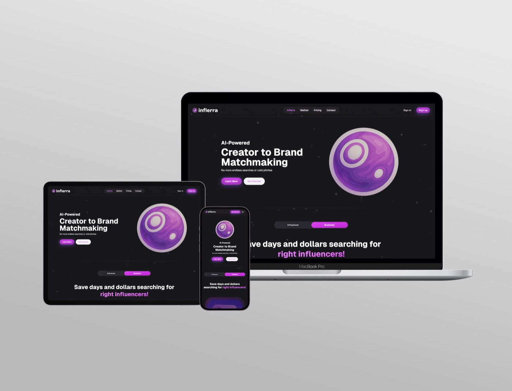
AIMobileTabletDesktop
Inflerra
Co-founded and led end-to-end UX/UI for an AI-powered influencer-brand matchmaking platform — built from zero, from brand identity to full product flows.
0→1 ProductDesign SystemsAI UX
View Case Study →
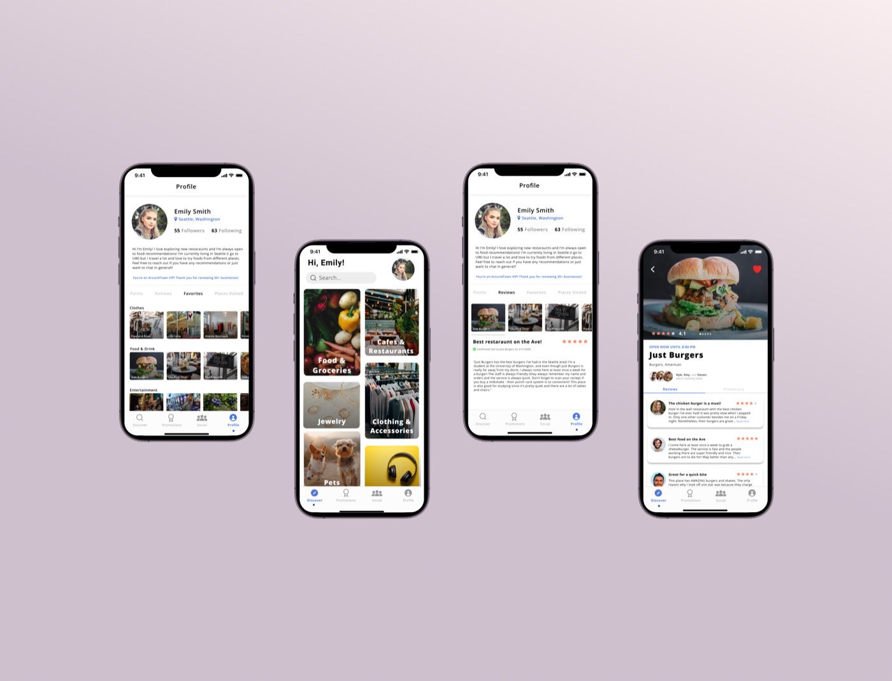
Mobile Design
Around Town
A community-driven mobile app helping small locally-owned businesses survive Covid-19 through promotions, reviews, and social discovery.
Selected work from an earlier chapter of my portfolio
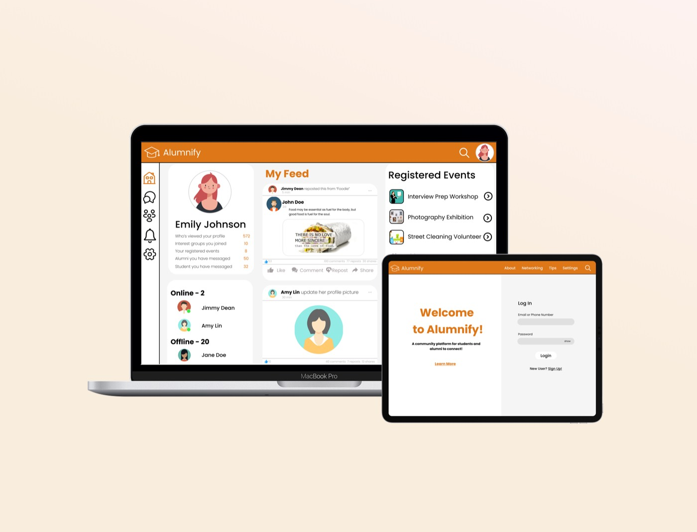
Web Design
Alumnify
A web application connecting alumni and students through mutual interests — enabling mentorship, networking, and career development across university communities.
View Case Study →
GitHub CopilotCodexClaude
This website
Designed and built this website using AI tools throughout the process, learning new workflows and refining the experience through multiple rounds of revision across content, layout, and implementation.
Built through AI-assisted iteration
Hi, I'm Emily
I'm a Seattle-based UX/UI designer with a BS in Informatics (Human-Computer Interaction) from the University of Washington.
I've designed products used by labs across the U.S. and Europe, contributed to a city-funded civic education initiative, and now serve as Co-Founder & Head of Design at Inflerra, an AI-powered influencer-brand matchmaking platform I'm building from the ground up.
My approach is deeply human-centered and research-driven. I don't guess what users need, I like to talk to them, test with them, and iterate until the solution feels simple, intuitive, and obvious in hindsight.
Outside of design, I enjoy exploring new creative tools, traveling, and finding inspiration in everyday interactions.
My Expertise
🎓 Informatics (HCI) graduate from the University of Washington, Seattle
🚀 Skilled in transforming complex ideas into user-centered designs
🧩 Focused on accessibility, storytelling, and intuitive user flows
💻 Experienced in creating and developing responsive web and mobile apps
As UX/UI Designer at Genemod, I led design across a scientific information management platform spanning web, mobile, and tablet design.
In a fast-paced startup, I wore multiple hats — from research and product design to light project management. This close collaboration with customers and internal teams gave me firsthand insight into how scientists actually use our platform and what they needed most.
150+
Labs on the platform
1M+
R&D activities
798K
Impressions / month
Key Contributions
Designed new SaaS features that expanded core functionality (e.g., Analytics Dashboard, Orders, Equipment Management)
Built scalable design systems to standardize UI patterns and improve developer handoff
Conducted user research and feedback synthesis through customer interviews, feedback sessions, and ticket analysis
Improved usability by validating previously submitted UX/UI tickets and refining existing workflows
Created marketing assets for events, social media, and campaigns to boost brand visibility and engagement.
Led responsive design across desktop, tablet, and mobile
02
The Challenge
As Genemod expanded, my work spanned both proactive feature design and ongoing UX optimization.
While designing new platform features to enhance the product’s capabilities, I also managed ongoing customer-reported tickets and feedback, ensuring we continuously improved existing experiences in parallel with building new ones.
The balance between feature creation and UX refinement is essential in a startup environment — it allowed us to deliver rapid value while maintaining usability and visual consistency at scale.
Common insights and challenges included:
Difficulty navigating between modules (Freezer, ELN, Orders, etc.)
Gaps in workflows — missing analytics or sample traceability
Outdated or inconsistent UI patterns across web and mobile
Balancing new feature development with iterative improvements ensured that every design decision moved the platform closer to a cohesive, scalable, and user-centered system.
03
Research Process
Working closely with customers, product managers, and engineers, I use multiple feedback channels to guide my design priorities:
1
Customer Reported Tickets
I categorized tickets by theme, prioritized by workflow impact, and converted findings into scoped UX improvements.
Working closely with customers, product managers, and engineers, I use multiple feedback channels to guide my design priorities:
Rather than treating these as isolated issues, I analyze them collectively to uncover recurring usability patterns and opportunities for product evolution.
My approach:
Categorize & cluster: Group tickets by theme (feature type, visibility).
Prioritize by impact: Identify which pain points affect the largest number of users or key workflows.
Translate into design action: Convert high-impact tickets into scoped UX improvements or feature concepts.
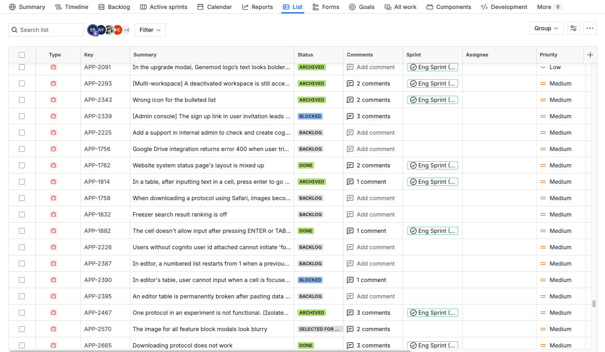
2
User Interviews
For major features, I coordinated interviews with scientists and lab managers. Before the Analytics Dashboard, interviews revealed that lab managers were using external spreadsheets for tracking — directly validating the need for built-in tools.
These interviews played a critical role in understanding our user’s day-to-day processes, terminology, and constraints.
Key activities:
Collaborate with Product to design interview scripts that explore workflow pain points, feature expectations, and software expectations.
Conduct virtual sessions with users to observe how they perform specific tasks within the current system.
Synthesize findings into actionable insights and user journey maps that directly inform feature architecture and UI decisions.
Zoom and Microsoft Teams were used to allow us and our users the ability to share our screens.
"I just want to track my team's order finances without exporting my data from Genemod into Excel." — Genemod user
3
Internal Testing & Validation
I performed QA testing on new features and completed tickets — verifying flows, identifying inconsistencies, and revalidating resolved tickets to prevent regressions.
Beyond user research, I play an active role in validating design quality through internal testing before new features or fixes reach production. This process helps ensure design consistency, reduce user frustration, and minimize customer-reported bugs after release.
Because Genemod operates in a fast-paced startup environment, I work closely with engineers and the CEO to perform in-depth QA testing on both new features and previously completed tickets.
My focus includes:
Testing new feature builds before release to verify that user flows, interactions, and visuals align with the intended design.
Identifying and documenting bugs in existing workflows (functionality issues, layout inconsistencies, accessibility gaps).
Revalidating resolved customer tickets marked “done” to ensure that fixes are implemented correctly and that no regressions occur.
Providing design updates or UI recommendations when fixes require layout or interaction improvements.
This proactive testing process helps reduce post-release issues and ensures users experience the product as designed.
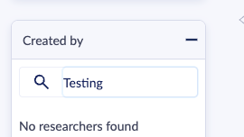
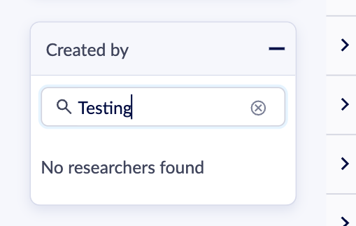
Example of internal testing documentation for a UI fix — validating the visual container border and interaction behavior before release.
4
Workflow Mapping
Before jumping into design concepts and to strengthen my understanding of how scientists interact with our platform end-to-end, I created detailed workflow maps covering Genemod’s core modules — including Freezers, Consumables, Notebook, Orders, and Protocols.
These maps visualize each user journey step, decision point, and task dependency across the platform, allowing the product and engineering teams to clearly see how one workflow impacts another.
By referencing these workflows, I was able to identify dependencies between modules, prioritize high-impact tickets, and ensure that new features integrated smoothly into existing user processes.
By establishing this system-wide map, I was able to:
Quickly identify high-impact pain points that affected multiple features.
Prioritize customer tickets that blocked core workflows (like sample tracking or data imports).
Provide engineers and PMs with a shared reference for system behavior, improving sprint clarity and design alignment.
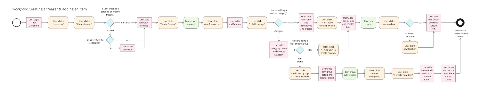
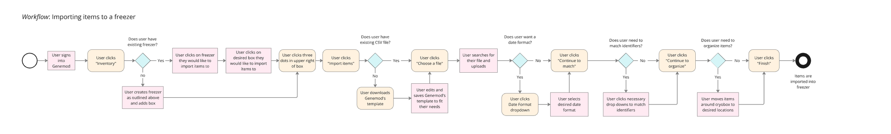
User workflow mapping for Freezers — used to define core scientific processes and identify high priority tickets.
04
Ideation
Once priorities are identified, I move into rapid ideation — creating low- to high-fidelity mockups in Figma and running internal design reviews with the product and engineering teams.
Each design cycle balances
User needs (pain points, desired functionality)
Business goals (feature adoption, retention, conversion)
Technical feasibility (alignment with current system constraints)
When users requested better visibility into sample analytics, I designed an Analytics Dashboard within our LIMS system.
It provided a visual overview of sample usage, freezer capacity, and consumable stock levels — giving lab managers actionable insights at a glance.
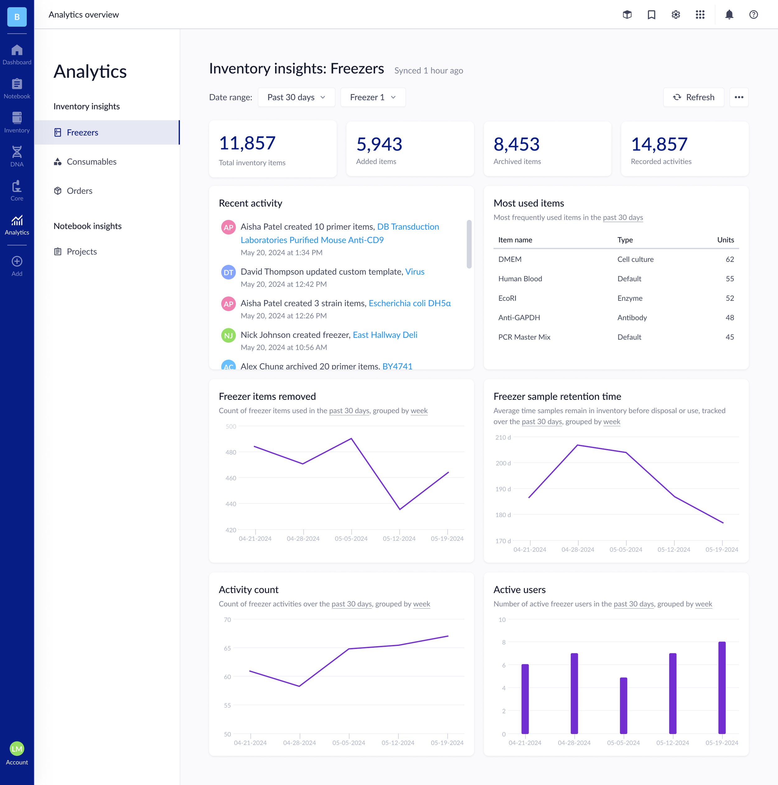
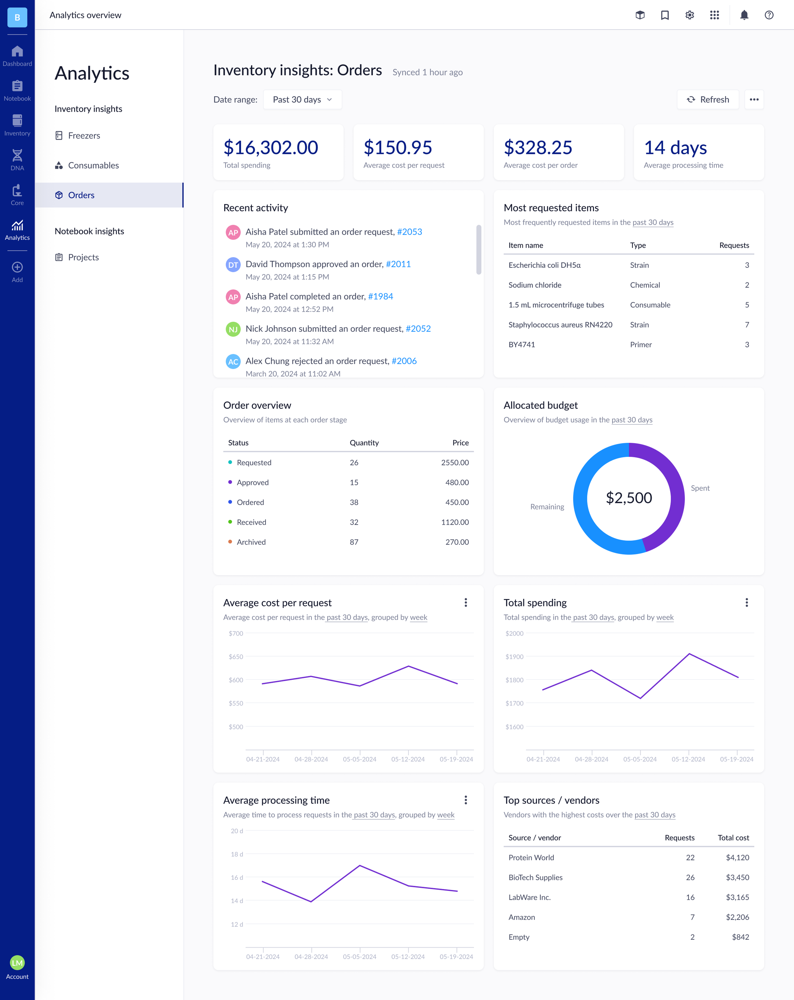
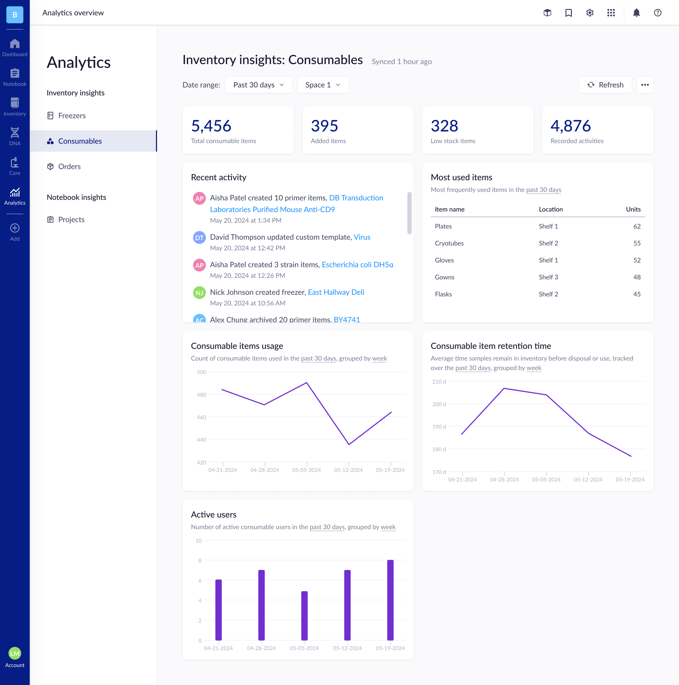
A look into Genemod’s Analytics feature for Freezers, Orders and Consumables
Simultaneously, I worked on ticket-driven fixes such as improving our barcode scanning UI and allowing users to move items from one place to another.
With the updated barcode UI users were able to:
Select more label size options
Adjust their printer resolution
Edit their Barcode ID if they were importing barcodes from another software
Customize the content on their label
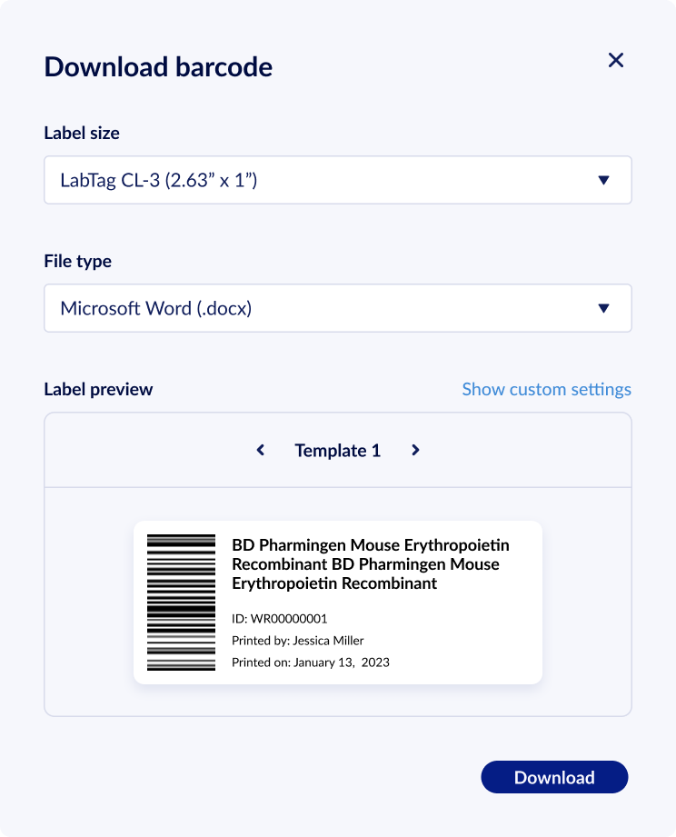
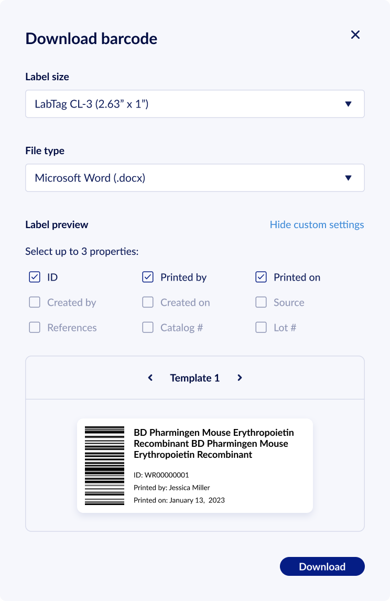
Before
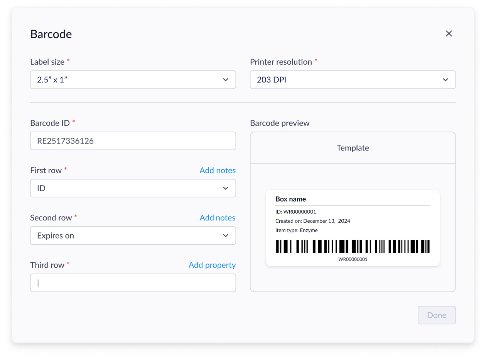
After
Impact of allowing more flexible organization:
Simplify repetitive workflows: Reduced the time scientists spent rebuilding existing racks across freezers
Decrease manual labor: Eliminated the need for duplicate setup steps, streamlining sample management
Improve flexibility: Enabled effortless location switching to support evolving lab layouts and sharing needs
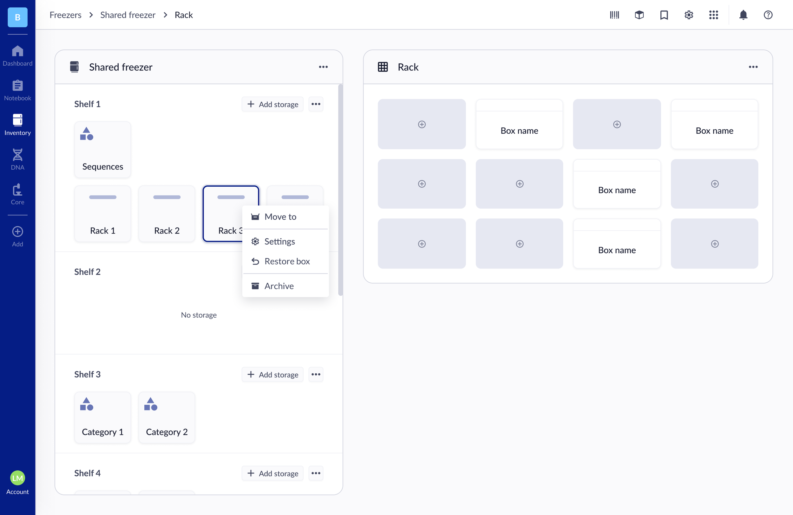
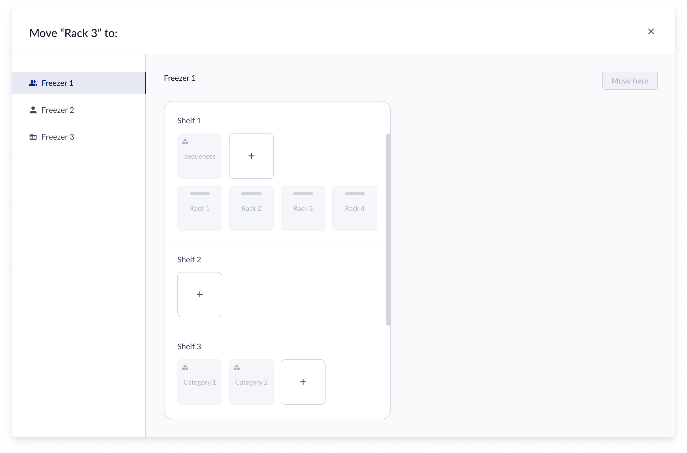
Genemod’s “Move Rack & Category” feature: designed to support faster reorganization and cross-freezer flexibility
05
Design Work
Analytics Dashboard
Gave lab managers a visual overview of sample usage, freezer capacity, and consumable stock — actionable insights at a glance, without leaving the platform.
High-level view of lab activity across all modules
Lab managers can track usage trends and freezer capacity
Modular data cards designed for future scalability
Barcode UI Redesign
Redesigned to support more label size options, printer resolution control, custom Barcode IDs, and flexible label content.
Move Rack & Category Feature
Eliminated the need for duplicate setup steps — enabling effortless cross-freezer reorganization for evolving lab layouts.
Freezer Item Color Coding
Introduced color-coded indicators for sample statuses, reducing time spent locating specific samples across large datasets.
06
Collaboration & Handoff
I collaborate daily with engineers to ensure designs are implemented accurately and efficiently. Using Figma components, shared libraries, and annotated handoff specs, I make it easy for developers to access states, variants, and spacing logic.
In parallel, I manage some project coordination tasks in Jira, helping organize sprints, prioritize user tickets, and ensure visual QA before launch.
Post-launch, I revisit tickets to monitor whether design updates resolved the original issue and gather feedback for continuous improvement.
07
Results & Reflection
Reduced post-release bugs through improved internal QA
Positive enterprise feedback citing improved clarity and consistency
Faster adoption for new modules like Analytics
Stronger design–engineering collaboration via structured systems
Working at Genemod taught me that great design isn't just about visual polish — it's about balance. Balancing feature innovation with ongoing improvements deepened my ability to prioritize, empathize, and design for scalability.
View More Projects:
InflerraAI · Mobile · Tablet · Desktop
Around TownMobile Design
AlumnifyWeb Design
Inflerra
AI-Powered Creator ↔ Brand Matchmaking
Role
Co-Founder, Head of Design
Timeline
December 2024 – Present
Tools
Figma AI · Adobe Creative Suite · Claude Code · Codex · Notion
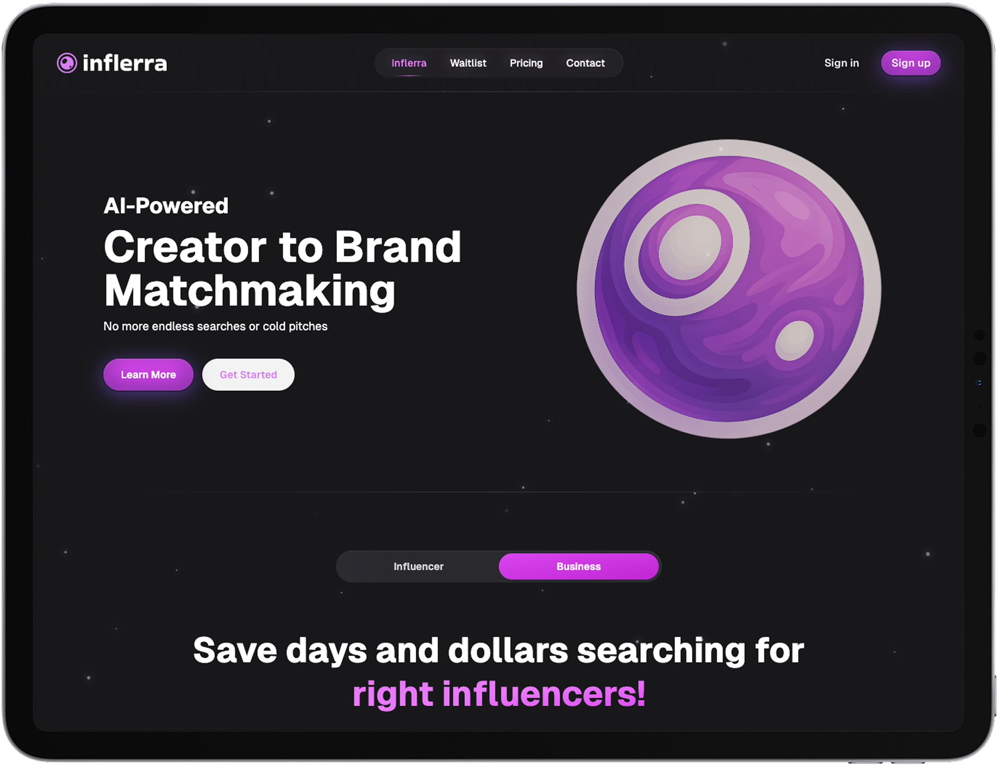
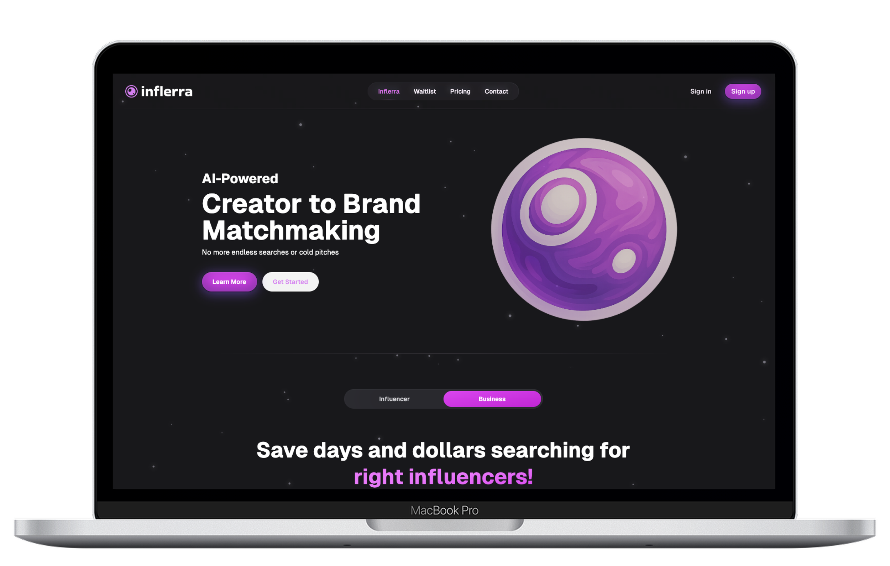
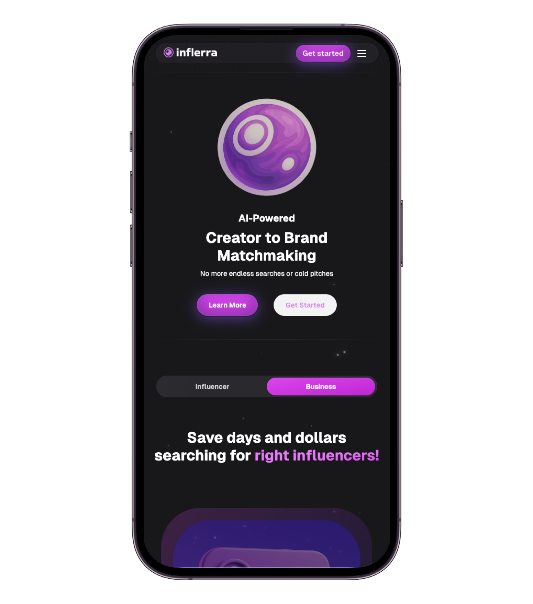
01
Overview
Inflerra is an AI-powered platform built to support both creators and brands equally — helping each side find partnerships that genuinely align with their goals, values, and audiences.
As a founding designer, I’m leading the end-to-end product experience for an early-stage startup focused on creating more intentional, transparent, and mutually beneficial collaborations.
What I Lead
Co-shaped a 0→1 product vision for a two-sided marketplace
Established the early design system and visual language
Designed flows for both creators and brands with equal clarity and trust
Translated AI-powered matching logic into usable, human-centered interfaces
02
The Problem
Influencer marketing is often inefficient and misaligned.
Brands struggle to find creators who truly match their audience, voice, and campaign goals. At the same time, creators spend a lot of time applying to partnerships that don’t reflect their values, interests, or long term direction.
Discovery today is manual, noisy, and optimized for quantity, not fit.
Brands need a faster way to evaluate creator fit beyond surface-level metrics
Creators need more relevant opportunities instead of high-volume, low-alignment outreach
Both sides need a process that feels more transparent, intentional, and mutually beneficial
03
The Vision
Inflerra uses AI-driven matching to connect brands and creators based on meaningful signals such as audience alignment, content style, pricing, brand values, and campaign goals.
The platform is designed to work both ways: helping brands discover creators who are a true fit, while also helping creators find brands they actually want to work with.
Our goal is to replace transactional partnerships with high-quality, aligned collaborations on both sides.
Creator Experience
Create personalized creator profile
Click Match and put AI to work
Negotiate and deliver
Get paid and grow
Brand Experience
New account, new campaigns
Click Match and send offers
Solidify the deal
Results and payment
04
My Role
As the Founding UX/UI Designer, I’m responsible for shaping the product experience for two distinct user groups, ensuring clarity, trust, and balance across the platform.
Defining end-to-end flows for creators and brands
Designing the desktop-first web experience
Establishing the early design system and visual language
Collaborating closely with our founders, engineers and PMs on AI-assisted UX patterns
Translating complex matching logic into clear, intuitive interfaces
A key focus of my role is designing our AI-powered experience to feel transparent, human, and empowering — not opaque or one-sided.
A community-driven mobile app helping small, locally owned businesses gain visibility, engagement, and support during the COVID-19 pandemic.
Role
Project Manager, Designer
Team
Emily Blakeman · Megan Luu · Sarah Huang · Kristine Dao
Type
Mobile App Design
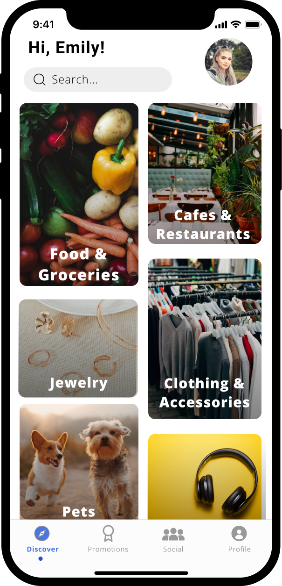
01
Overview
Around Town was created during the COVID-19 pandemic to help small, locally owned businesses stay visible and connected to their communities at a time when foot traffic, revenue, and business stability were under pressure.
The app was geared toward serving and empowering small, locally owned businesses by creating a resource that would allow consumers to easily discover businesses, support outreach and sales, and stay engaged with the places they care about most.
“To support one’s community is to support the people that helped shape everything around you.”
4
Team members
2
Primary audiences
0→1
Concept-to-interface build
02
The Problem
Due to the COVID-19 pandemic, many small businesses were struggling or shutting down because of reduced customers, tighter restrictions, and capacity limits. As those constraints increased, the survival of local businesses became harder and harder.
That pressure affected not only individual owners, but also the families and local economies that depended on those businesses staying open.
With the need for financial stability and visibility becoming more urgent, we wanted to design a solution that could help small businesses stay active, gain recognition in the community, and create stronger incentives for people to shop locally.
Goal
Create a platform that encourages users to support small and locally owned businesses through incentives such as discounts, along with bios, reviews, and location services to support those struggling through the pandemic.
03
Core Features
The product centered on features that could help both users and businesses connect more easily, discover nearby opportunities, and build social motivation around supporting local commerce.
Search
Users can look for small businesses through category-based search such as food, clothing, and online stores. The experience also supports finding friends within the app to add a social layer to discovery.
Promotions
Users can view promotions from businesses in their area, helping them quickly see which places are offering deals and discounts. Businesses can choose whether to offer promotions and define what those promotions look like, from percentage discounts to punch card rewards.
Social
Users can follow friends and other community members, then see their reviews in a feed. This social proof helps surface trusted recommendations and encourages more people to support the businesses their community already values.
04
Low-Fidelity Exploration
We used low-fidelity wireframes to define structure, clarify the core experience, and map the most important user flows before moving into visual polish. This phase helped us pressure-test information hierarchy and feature scope early.
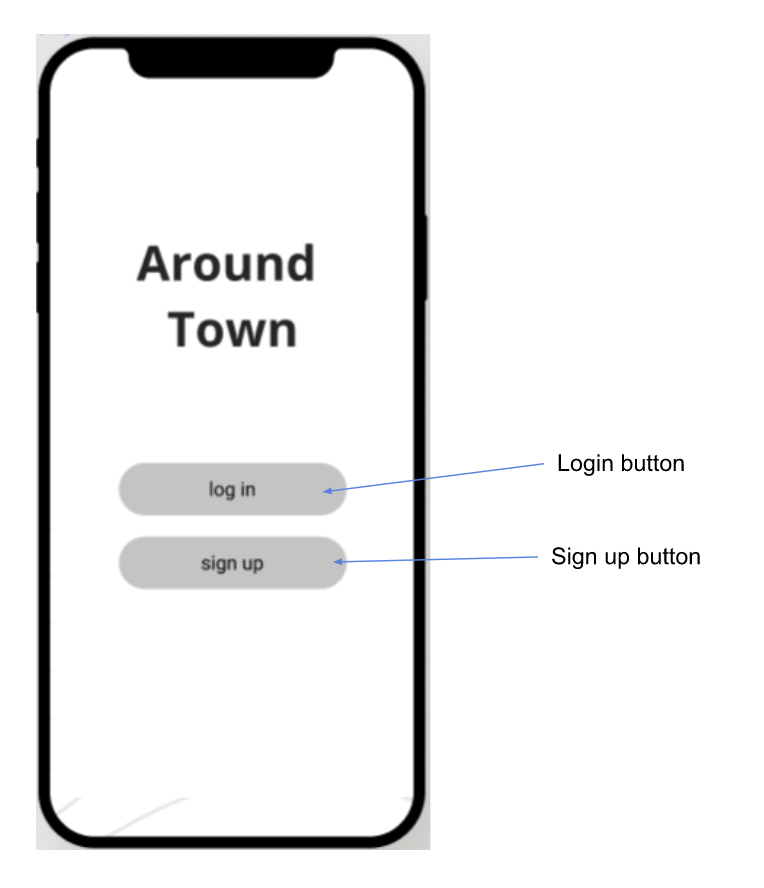
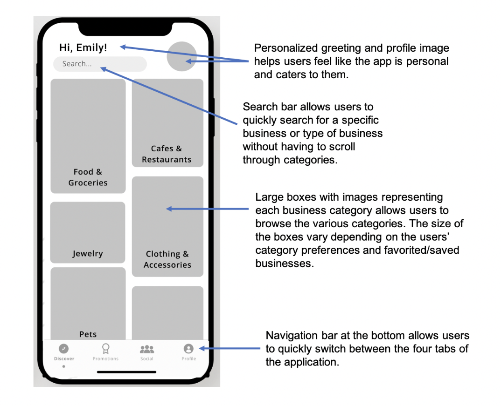
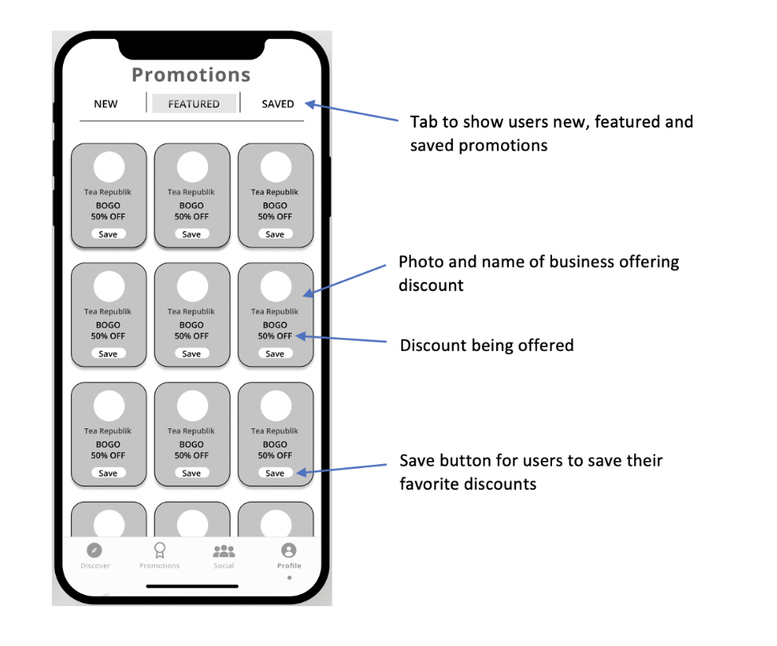
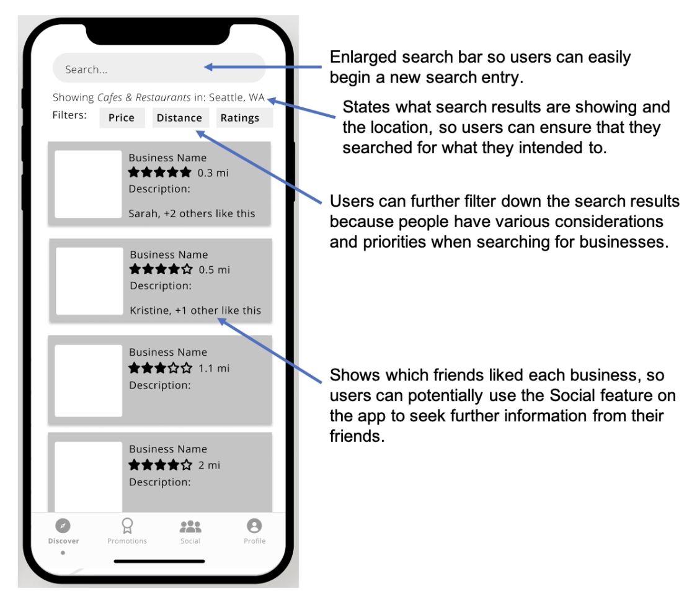
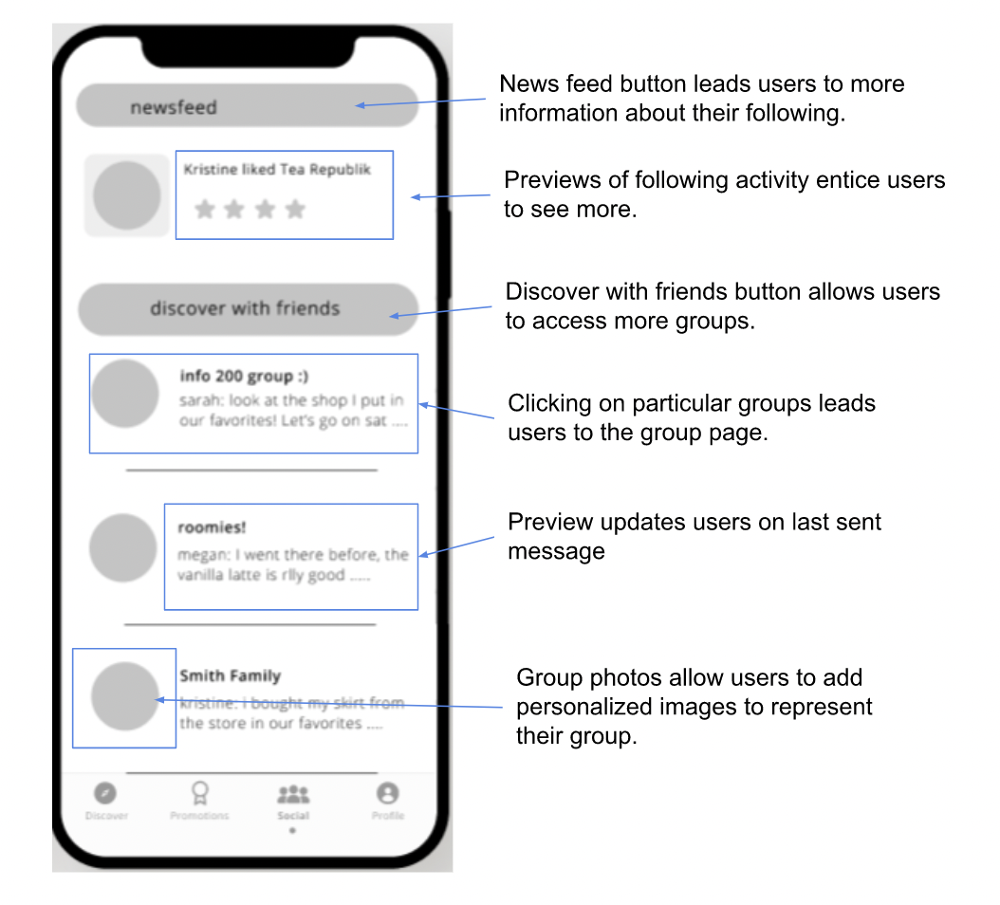
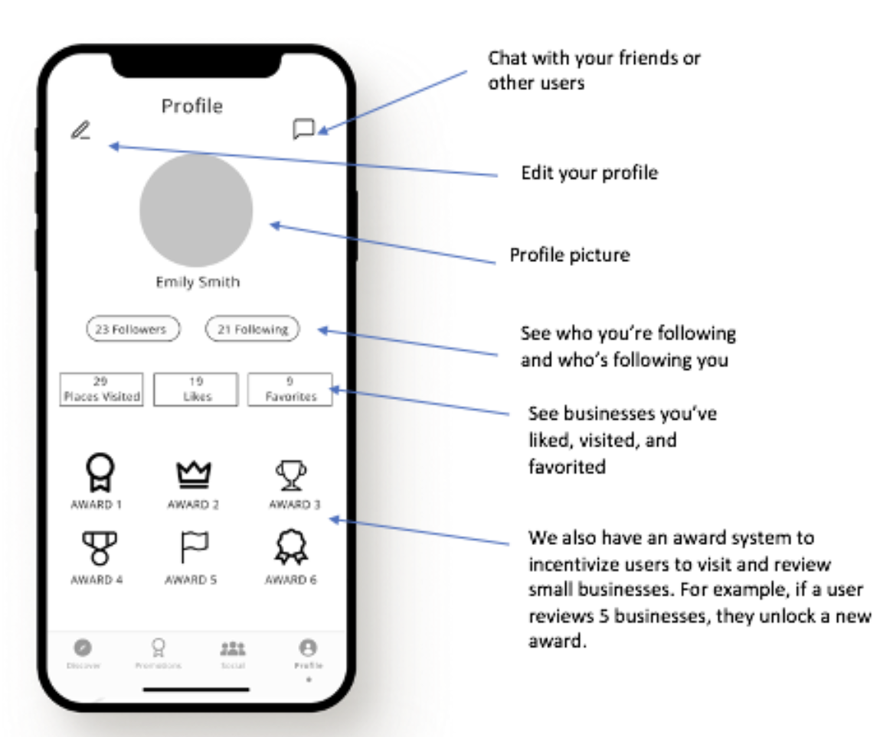
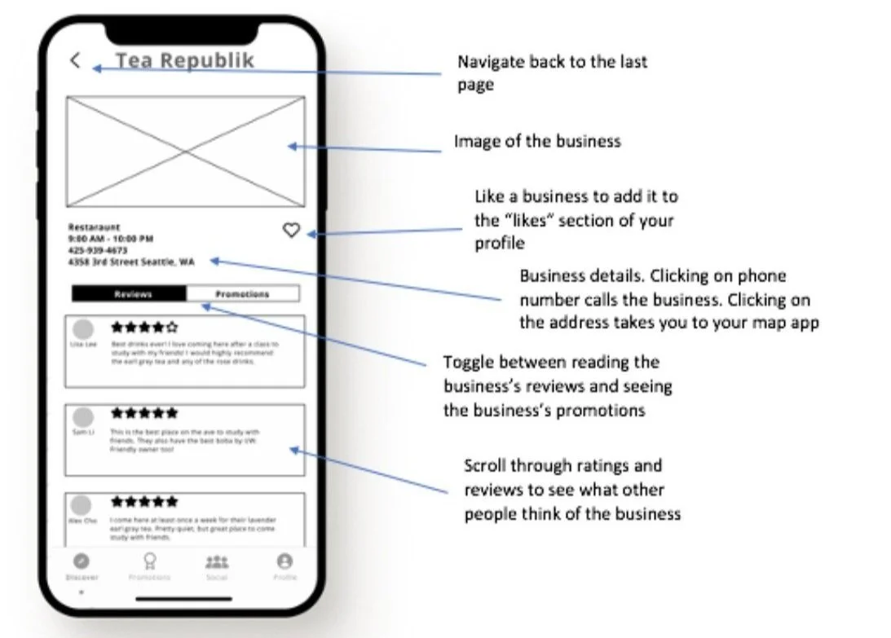
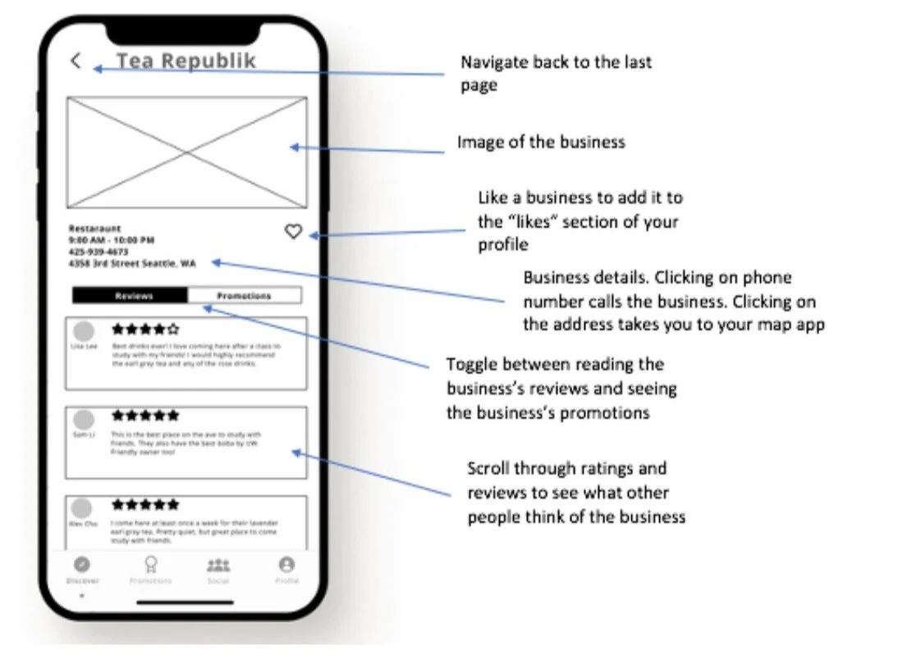
05
Visual Direction
The visual system was designed to feel approachable, trustworthy, and easy to read. We wanted colors that conveyed trust while still standing out against a white background, paired with a clean font system that stayed accessible across screens.
Style Guide
#4A75E4 — Primary Blue#ECDA9B — Warm Yellow#A5C9FF — Sky Blue
Fonts
Open Sans LightOpen Sans NormalOpen Sans SemiBoldOpen Sans Bold
Easy, clear-to-read typography for a wide range of users
Colors that represent trust yet maintain contrast against a white interface
06
High-Fidelity Design
The high-fidelity work translated the concept into a fuller mobile product experience, including onboarding, account creation, search, business profiles, reviews, promotions, social feeds, and settings. The goal was to make local business discovery feel useful, social, and actionable.
Getting Onboarded
Using the search engine
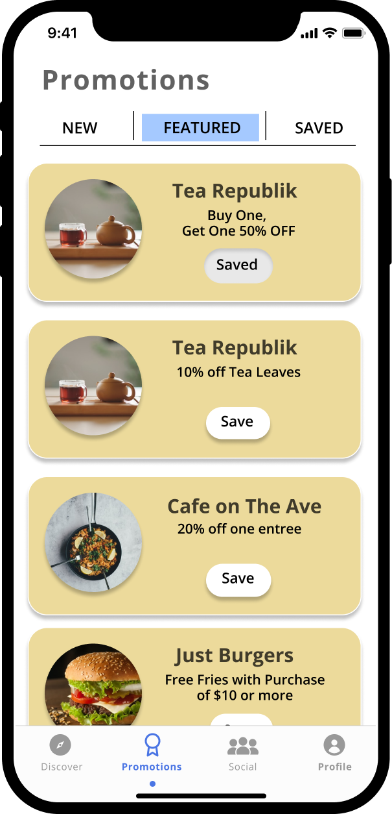
Navigating your profile
Viewing the restaurants profile
Socialize with other users
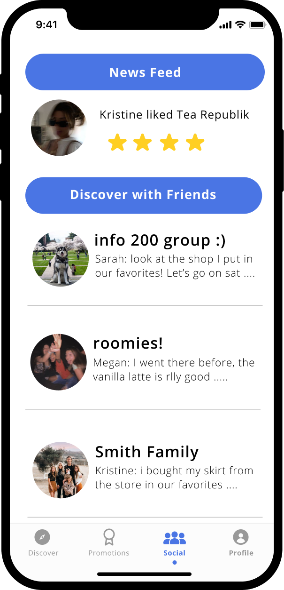
Creating and posting a review
07
Key User Flows
Create an account based on whether you are a business or a consumer
Search and discover local businesses by category
View business profiles with reviews and hours
Create and post reviews, then browse your review history
Browse and activate promotions and local deals
Follow friends and view community recommendations in a social feed
Around Town taught me how product design can respond to urgent real-world conditions with a balance of empathy, clarity, and practical incentives. It also strengthened my ability to work across project management, interaction design, and collaborative product thinking within a small team.
This project taught me how to shape a user-centered concept from the ground up, organize a team around a meaningful problem, and move from low-fidelity exploration to a polished mobile experience with a clear feature strategy and visual system.
View More Projects:
GenemodSaaS · Mobile · Tablet · Desktop
InflerraAI · Mobile · Tablet · Desktop
AlumnifyWeb Design
Alumnify
A web application geared towards assisting alumni and student career development, mentorship, and connection through mutual interests and groups.
Role
UX/UI Designer
Timeline
January – March 2023
Team
Emily Blakeman · Emily Eckey · Emily Yu
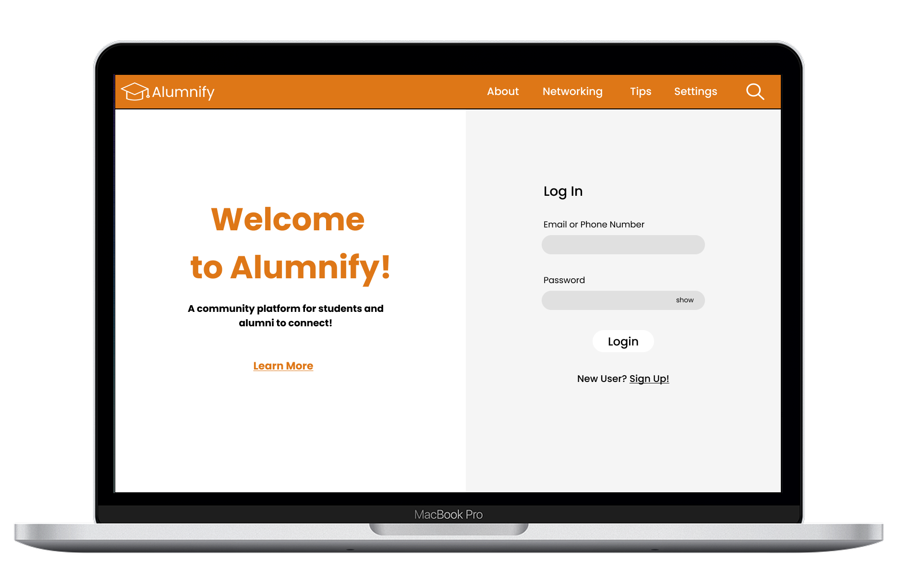
01
Overview
Alumnify was designed to strengthen the relationship between alumni, current students, and university stakeholders through networking, mentorship, shared interests, and community groups.
The project focused on building a platform that could support long-term engagement after graduation while also creating clearer pathways for career development, mentorship, and alumni involvement.
Alumnify aims to serve as a platform that facilitates networking and engagement between our users through mutual interests and interest groups to allow the ability to gain more connections and networking opportunities.
3
Primary user groups
0→1
Concept to platform direction
Web
Responsive product concept
02
Problem Space & Objective
We started by defining a clear gap: alumni often do not know how to update their information or stay connected with their organization after graduation. Many also want to mentor students or reconnect with their university community, but lack a dedicated platform to do so.
At the same time, students need better access to mentorship and employment opportunities, while university leadership and partners need more visibility into alumni outcomes and stronger ways to foster long-term engagement.
Objective
Create a digital platform that helps alumni, students, and university organizations build meaningful relationships through shared interests, mentorship opportunities, groups, and professional networking.
03
Research
Our research process focused on defining the problem, identifying the people most affected by it, and understanding how the current alumni ecosystem was fragmented across different user groups.
Stage 1
Defining the problem: alumni lacked simple ways to stay in touch with their organization post-graduation, while students lacked a clear channel for mentorship and career connection.
Stage 2
Identifying key users and stakeholders: alumni, current students, university partners and employers, advisors, leadership, and affiliates all had different incentives and information needs.
Stage 3
Mapping the current state: we grouped stakeholders into alumni, students, and organization leadership so we could clarify needs, overlaps, and platform priorities.
Key Stakeholder Groups
Alumni
Interested in staying connected after graduation, mentoring students, and remaining involved with their university community.
Students
Looking for mentorship, career advice, networking opportunities, and stronger connections as they prepare for life after university.
Organization Leadership
Includes advisors, partners, employers, affiliates, and leadership teams who need better visibility into alumni outcomes and partnership opportunities.
04
Synthesis & Ideation
After gathering initial research, the team synthesized findings through affinity clustering to identify the themes that mattered most. Each team member wrote down important Alumnify-related terms on sticky notes, then grouped them into larger categories based on similarity and relevance.
We then voted on the categories and ideas we believed were most important to carry into the design phase. This allowed us to ground feature decisions in a shared understanding of user needs rather than assumption.
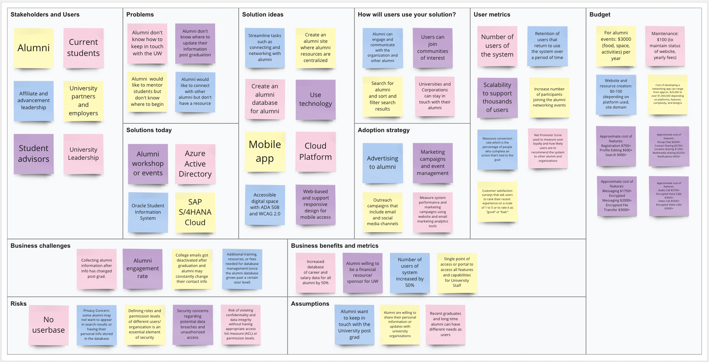
Design Priorities
Surface mentorship and networking opportunities more clearly
Build around shared interests and group participation
Support both alumni and student-specific goals without fragmenting the product
Create a system that university leadership could also use for engagement and insight
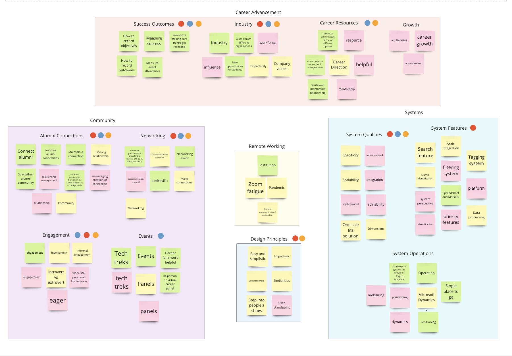
05
Workflow Diagrams
To better understand intended features, system behavior, and relationships between different user roles, we created use case workflow diagrams. These diagrams helped us map important actions, dependencies, and functionality before moving further into interface design.
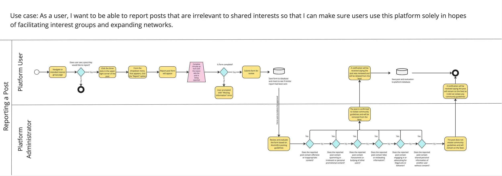
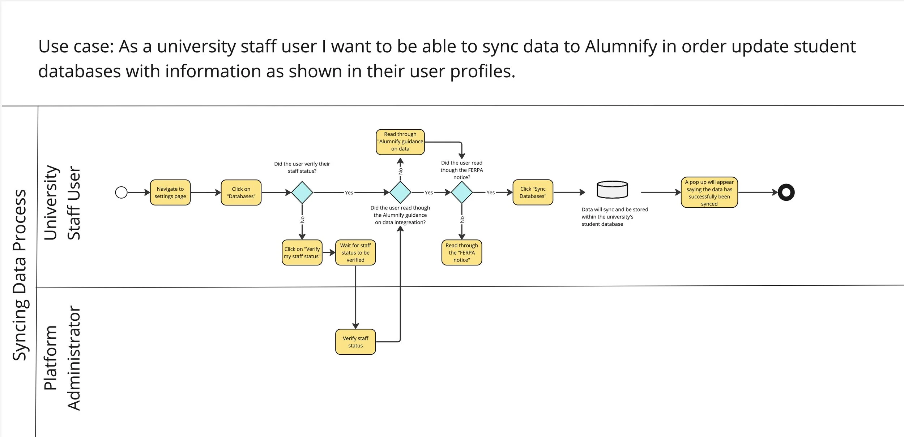
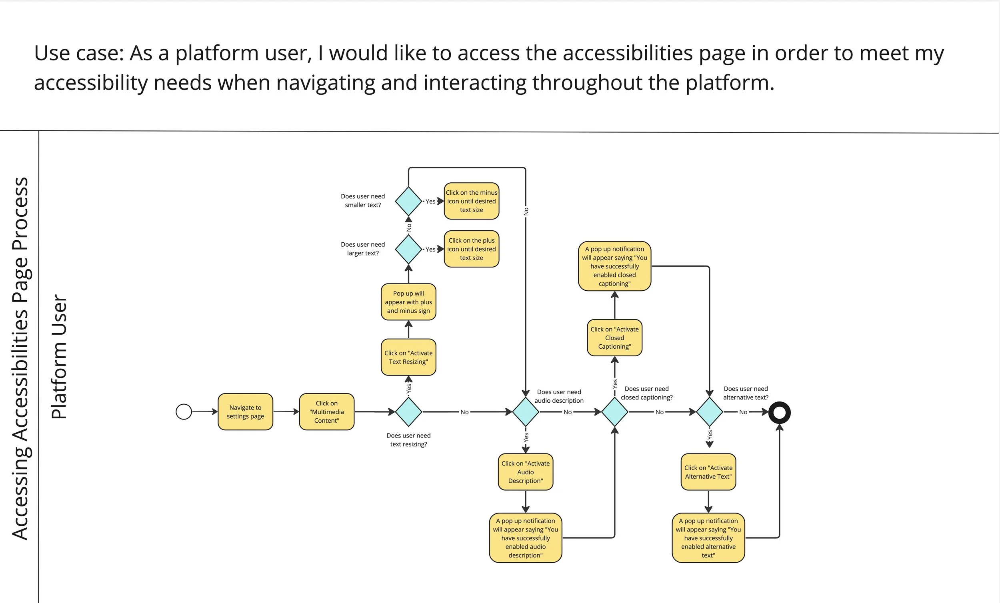
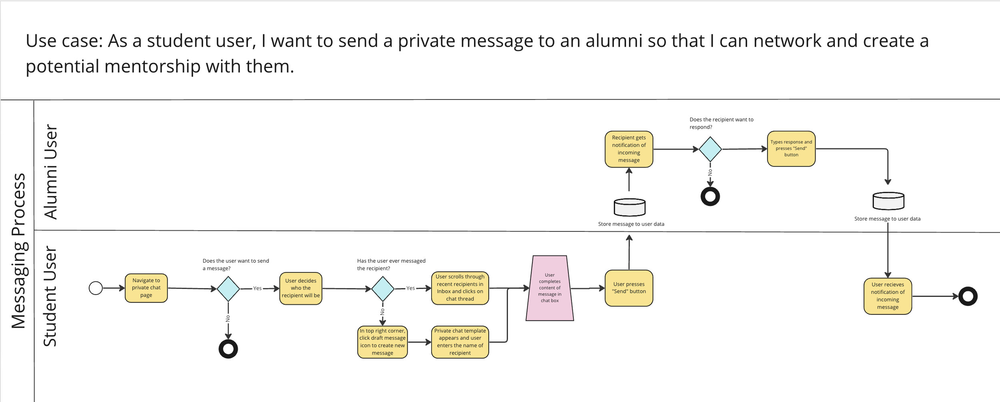
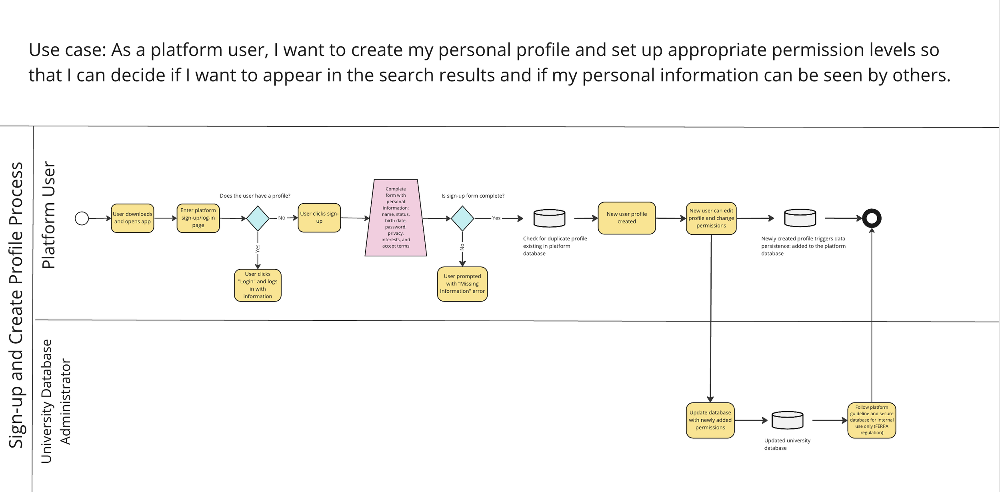
06
Design Direction
The design goal was to create a web platform that felt user-friendly, simplistic, and informative while still supporting a broad set of networking and organizational needs.
Interest Groups
Users can join interest groups, post to a group feed, and create or participate in events within that group. This gave the platform a stronger sense of community while supporting connection through shared interests.
Settings & Personalization
Settings were designed to help users personalize their account and control what type of content is shown to them, improving relevance, accessibility, and overall usability.
Role-based onboarding for alumni, students, and staff
User profiles centered on interests, background, and career development
Community posting, events, and group-based interaction
Search and filtering to support discovery and connection
Administrative views that support university organization and outreach
07
Key annotations
08
Reflection
This project sharpened my ability to translate broad stakeholder needs into a clearer product strategy, especially when multiple audiences needed different outcomes from the same platform.
1
Centering Design Around User Research is Key
Through researching and understanding key user needs and goals, we were able to shape a more useful and user-friendly application with features tailored to real user desires.
2
Accessibility is Always a Priority
By including flexible settings, visibility controls, and content options, the platform became more inclusive for a broader range of users and abilities.
3
Creating a Team Timeline is Tremendously Helpful
Having clear project deadlines across each phase helped the team stay aligned, manage different schedules, and leave enough time for feedback and iteration.
View More Projects:
GenemodSaaS · Mobile · Tablet · Desktop
InflerraAI · Mobile · Tablet · Desktop
Around TownMobile Design
Welcome to my Gallery :)
I believe creativity extends far beyond pixels.
Through painting and travel, I explore color, form, and emotion — the same principles that shape my approach to design.
This gallery captures moments, I've both painted and lived, that continue to inspire how I see and create.
🎨 Artwork
🌍 Travel & Inspiration
Traveling teaches me to see design everywhere — in architecture, nature, and daily life. These moments remind me that inspiration often starts with curiosity.


.png)
.png)


.png)
.png)
.png)
.png)
.png)

.png)
.png)
 (1).png)
 (2).png)
 (3).png)